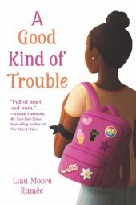

Hobbies
My favorite hobby is reading!I enjoy reading all types of books but I mostly prefer fantasy books. Scroll down below for more information.
A few of my favorite fantasy series are Harry Potter, Percy Jackson and the continued series of Percy Jackson known as Heroes of Olympus. I have a few options on my best book, but there is another book apart from this series that I can not forget.
An Unforgettable Book

My most favorite book yet is "A good kind of trouble" by Lisa Moore Ramée. This book mainly focuses on issues about racial stereotypes, first crushes, ethnic identity, and friendships in a carefully structured way for middle-grade students to digest. It is how a 12 year old girl overcomes her fear of standing up for what is right while dealing with school drama.
Other article reviews about "A Good Kind Of Trouble"
Thank You